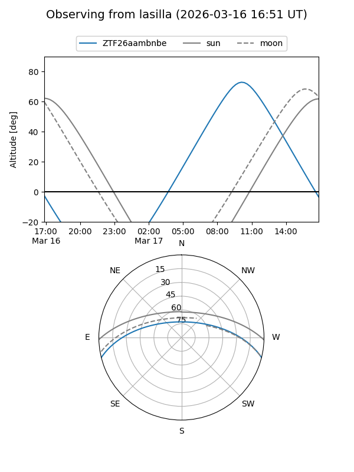
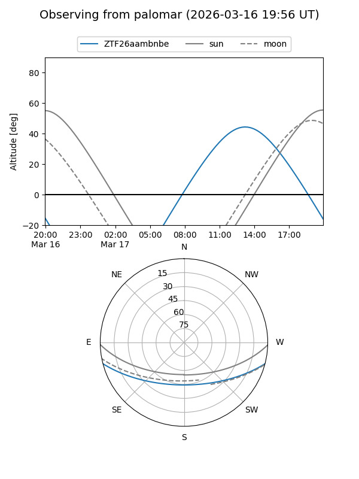

ZTF26aambnbe
Target ZTF26aambnbe at 2026-03-16 13:45
Aliases and brokers:
FINK: link
Lasair: link
ALeRCE: link
alt names
ZTF26aambnbe (ztf,fink_ztf)
Coordinates:
equatorial (ra, dec) = 256.0617,-12.19359
equatorial (HMS+DMS) = 17:04:14.81,-12:11:36.92
galactic (l, b) = (8.9061,+17.21041)
Flags:
Photometry:
last ztfg=17.34
1 ztfg detections
Lightcurve
Visibility


Additional plots